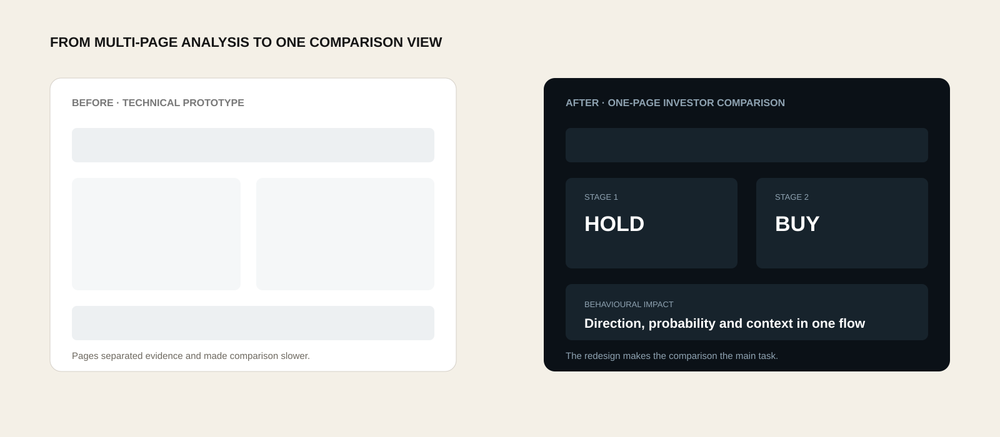

Technical indicators only
Price, volume, momentum, trend and volatility.
UX / PRODUCT / BEHAVIOUR
Making uncertain financial predictions easier to question, compare and understand.

This project was provided by Lambda BI Ltd through the University of Leicester's UniWorX industry project programme. We were asked to investigate whether psychological market factors could improve financial prediction.
As part of a group of four MSc Data Science students, I independently built the LightGBM classification model, explainability analysis and Streamlit dashboard. I then treated the dashboard as a UX problem: how could an investor compare the technical baseline with behavioural information without being encouraged to blindly trust the model?
Historical evaluation results, not evidence of future investment returns.
The first dashboard translated the model out of notebooks, but it was still shaped around the analysis rather than the investor. It was multi-page, scroll-heavy and made users work to answer four basic questions:
How might I help an investor understand a model signal without encouraging blind trust in it?
I used the modelling process as product discovery and kept two comparable stages:
Price, volume, momentum, trend and volatility.
News sentiment, VIX and engineered rolling features.
This made the behavioural contribution visible rather than assumed.
Exact next-day return prediction produced weak regression results, with R-squared values negative or close to zero. Instead of disguising that weakness, I changed the task to five-day direction + probability.
This was more useful for the intended mid-term investor and better matched what the evidence could support.
Stage 1 vs Stage 2 made the behavioural contribution measurable across markets.
Probability, SHAP and external validation shaped how confidence and limitations appear in the interface.
Market data + VIX + news → Python feature engineering → LightGBM → Streamlit.
Each model stage tested whether behavioural information added useful signal before it became a product feature.
Behavioural features improved tuned LightGBM classification: S&P 500 F1 58.9% → 62.5%; FTSE 100 F1 26.8% → 43.3%.
MACD, CCI, RSI, EMA and ATR carried most of the signal. Sentiment and VIX added context rather than consistently leading predictions.
The S&P-trained LightGBM model reached 69.4% F1 on unseen Russell 2000 data, showing why transfer cannot simply be assumed.
I translated the findings into three design principles:
Show Stage 1 and Stage 2 together.
Keep direction, probability and evidence distinct.
Move from a simple signal to its technical and behavioural context.
The redesign is organised around one question:
Did behavioural information change the technical signal enough to matter?

Users can see whether behavioural information changed direction, probability or neither.
Comparative information designAn UP or DOWN label stays scannable without implying certainty.
Risk communicationThe interface explains how behavioural information changed probability and direction.
UX writing for complex systemsTechnical indicators, sentiment and VIX support the main comparison instead of competing with it.
Information architectureThe redesigned experience keeps the core decision journey on one page: select a market and date, compare both stages, then inspect the evidence behind the difference.
Model output → uncertainty → interface. I used probabilities and explainability evidence to avoid presenting a prediction as certainty.
This is the latest dashboard build from the project repository. The Streamlit prototype runs locally; the portfolio shows the latest interface here so the case study remains accessible without requiring a separate app deployment.
The original dashboard did not have a validated live-news pipeline. I therefore avoided presenting Stage 2 as a fully live prediction. Price and technical context can support current views, but new behavioural predictions require the same timestamped news → sentiment pipeline used during training.
The model was evaluated. The redesigned experience still needs usability testing.
This is decision support, not financial advice. A future iteration would replace direct BUY/SELL language with evidence-led wording:
I would also test “Why this signal?” explanations, chart accessibility, contrast and reduced motion.
I would run five moderated sessions with self-directed mid-term investors. Tasks would test whether participants can:
OUTCOME
The redesign made the behavioural contribution inspectable in one place, connected each signal to its context and exposed where the evidence stopped.
It did not make an uncertain model certain. It made the uncertainty visible enough for a person to judge.
Problem framing · Information architecture · Interaction design · Data visualisation · UX writing · Accessibility thinking
Explainability · Uncertainty communication · Confidence calibration · Transparent limitations
Quantitative comparison · Model evaluation · Experimental comparison · External validation
Python · VS Code · GitHub
LightGBM · Optuna · SHAP
Streamlit · Plotly